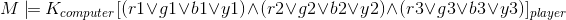
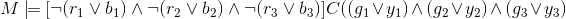
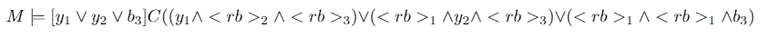
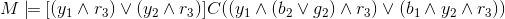
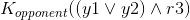

Avinash Pathapati :: Conaire O Codlatáin Lachtna :: Varun Ravi Varma
The game has been modelled in order to understand the decision making processes of the agents involved (a CPU player and a human player). Each possible combination is treated as a possible world for the player. This gives rise to 64 states per player at the beginning of a game. As the game progresses, based on the feedback logic, states are deemed logically impossible.
Knowledge at the beginning of a game is of the following form:

For example, if a player guesses Red, Blue, Green and then receives as feedback three white pegs, then the player knows that the color Yellow is not present in the opponent's code.
Common knowledge pool is generated based on the feedback a player presents on their guess as well as the opponent's feedback.
For example, if a player guesses Red, Blue, Green and then receives as feedback three white pegs, then the player knows that the color Yellow is not present in the opponent's code. The opponent is also aware of this fact, hence both agents now know that the color Yellow is not present in one of the codes and they know that their respective opponents also know the same, thus this becomes common knowledge.
When playing, players aim to increase common knowledge about their opponents code while limiting common knowledge about their own. To do this, players can use certain strategies.
At the start of a game a player might include at least one of the colors in their code in their guess. For example, say the player's code is yellow yellow green and the player's guess is 'red blue blue'. This means no pegs will be given as feedback which results in the public announcement:

If they had instead made the guess 'blue blue yellow' they would get a feedback of one white peg which results in the public announcement:

The second announcement results in the exclusion of lesser states for the opponent, so it is more desirable for the player to let the opponent have a larger number of possible worlds.
Another strategy is to make guesses following an opponents guess that do not increase common knowledge of your
code at all.
Say, your first code is 'yellow green red' and your first guess is 'green red blue'. The opponent will get feedback
of two white pegs. Then your opponent guesses 'yellow yellow red' which gives the feed back of two black pegs.
The opponent now knows that you have a red in the third position. This is true because the alternative is that
yellow is in the first and second position but this can't be the case as two white pegs were given for the first guess
which indicates that two of the three colors appear in the code, so along with the two yellow this would make for positions
but there are only three. If yellow is in the first position, blue or green can be in the second. If yellow is in the second position
only blue can be in the first as green can't as we would then have gotten a black peg in the feed back for the very first guess.
This gives the public announcement:

Then if you guess 'red red yellow', which may give you more information, the opponent will get two white pegs, this doesn't increase the opponents knowledge of your code at all as we already have:

There is a change in the knowledge of the agents as the game progresses due to the reduction of states and the feedback generated. The growth is not necessarily at a constant rate, since the agents aim to restrict the information they pass to their opponents while trying to guess codes.
The computer agent utilizes the following strategy in order to reduce its possible worlds while continuing to guess the opponent's code. Every world the agent chooses returns feedback on its own code in the following hierarchy (in decreasing order of importance):
This greedy state search approach was suggested by Donald Knuth[3] to solve the Mastermind game in 5 moves.